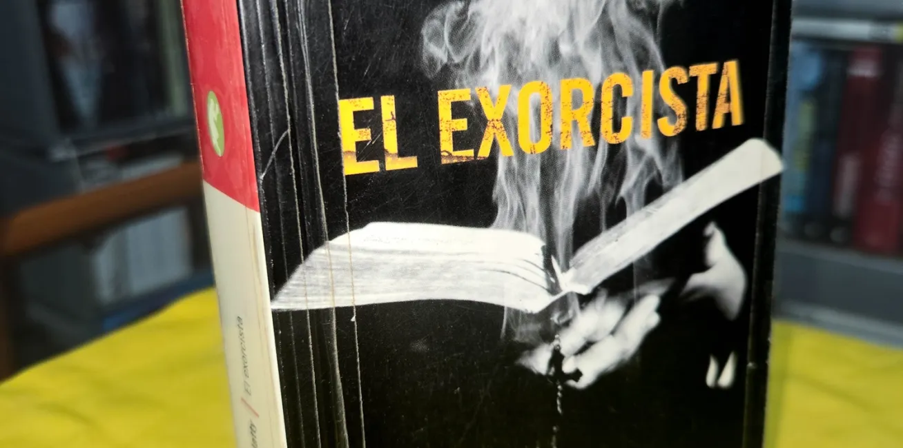

El Exorcista
“El exorcista”, una historia de terror que ha ganado adeptos por la película como por la novela. Envuelta en polémica desde su lanzamiento, sigue vigente entre los lectores de terror y amantes de las películas de este género. Aquí un comentario al respecto de Salvador Flores.

El Exorcista.
Escrita por: William Peter Blatty.
Publicado en: 1971.
Edición en Español por: Ediciones B de 2006.
407 páginas.
¿Crees en el demonio? Porque él cree en ti.
Cerramos la trinidad de obras de terror de la década de los setenta con “El exorcista”, escrita por William Peter Blatty.
En 1973, William Friedkin, dirigió la icónica adaptación de esta magnífica obra, realizando posiblemente la mejor adaptación de una obra literaria al cine. Logró la aceptación del público y la crítica por igual. Obtuvo 10 nominaciones a los premios Oscar incluyendo mejor película y ganando dos premios: Mejor guión adaptado y mejor mezcla de sonido. La Academia decidió solo darle esos premios porque los géneros de Terror, Ciencia ficción y Fantasía no eran considerados serios.
Pero no todo era felicidad para esta producción. Sufrió intensas polémicas por su contenido crudo, religioso y blasfemo, recibió condenas de grupos religiosos que exigían su prohibición porque, según ellos, tenía un mensaje moralmente corrupto y blasfemo, además de tener como protagonista una niña (Linda Blair tenía 12 años en el momento de la filmación), como objeto de la posesión, realizando actos lascivos con un crucifijo. Argumentaban también que la cinta mostraba que el mal era superior a todo (cosa contraria al mensaje de esperanza de la película y de la novela). Algunos cines debieron tener a la salida ambulancias para atender a las personas que sufrieran efectos tan extremos como desmayos y crisis nerviosas.
La filmación no se libró de “La maldición” que a menudo acompaña producciones de esta naturaleza. El set de rodaje se incendió, excepto la habitación de la niña, causando rumores de una maldición en el rodaje, incluso surgió el rumor de que la niña que interpretó a Regan, Linda Blair, murió después de filmar la película.
A pesar de, o debido a las polémicas, la película tuvo gran éxito, consolidándose como un hito del género y definiendo la representación del mal en la pantalla.
Las actuaciones estuvieron a la altura de la obra, desde los personajes principales, Linda Blair, como la icónica Regan McNeil; Ellen Burstyn como la madre que nunca perdió la esperanza, Chris McNeil; Jason Miller como el atormentado padre Damien Karras; Max von Sydow como el enigmático padre Lankester Merrin y Lee J. Cobb, como el extraño teniente Kinderman.
Mis primos y yo, fanáticos de sentirnos aterrados en esa época en la que éramos felices y no lo sabíamos, la década de los 90, vimos la película en TV abierta, pero esa obra cinematográfica no sería la única que me marcaría. En una ocasión mi padre llevó varios libros a casa (mi padre era un gran lector, mi ejemplo a seguir), entre ellos El exorcista en una edición de EMECÉ. Lo tomé sin permiso, la emoción de hacer algo prohibido me daba más motivación, pero, siendo un niño impresionable me causó pesadillas durante bastante tiempo.
En el 2000 llegó a los cines una versión remasterizada por el director y, como buen fanático de la obra, acudí a disfrutar de una dosis de terror garantizada. En el 2006, cuando me encontraba en mi peregrinación habitual a Sanborns (tienda departamental que contaba con una buena dotación de cómics y libros), me encontré un ejemplar editado por Ediciones B. No resistí comprarlo y darle una nueva lectura ya con mayor comprensión del mundo, disfrutándolo tanto como si fuera la primera vez.
La obra trata sobre la confrontación del bien contra el mal, el mal absoluto.
El padre Lankester Merrin, un sacerdote anciano, dirige una excavación arqueológica en Irak, ahí encuentra una figura arcaica de un demonio sumerio de nombre Pazuzu, junto a una medalla de San Cristóbal.
En Washington D.C. la joven Regan McNeil contrae una extraña enfermedad, su madre, Chris McNeil, una famosa actriz, busca ayuda en instituciones médicas, sin que nadie pueda darle un diagnóstico. En la casa comienzan a suceder fenómenos paranormales mientras Regan atraviesa una serie de cambios físicos y mentales, que hacen pensar a su madre que está poseída por algún espíritu maligno.
Desesperada, acude con un sacerdote de la localidad, el padre Demian Karras, quien atraviesa una crisis de fe por la muerte de su madre. En un principio rechaza ayudarlas espiritualmente, pero acepta visitarlas como psiquiatra. Al principio se niega a admitir la posibilidad de una posesión y tras varias situaciones sobrenaturales se convence de que no hay otra forma de salvar a la niña que practicándole un exorcismo.
Comienza la batalla entre el bien y el mal, donde los personajes son obligados a enfrentarse a sus propios miedos y creencias, revelándose secretos oscuros y desencadenando eventos aterradores que mantendrán al lector al borde de la desesperación.
Blatty, crea un ambiente claustrofóbico, espeluznante y sobrenatural. Conforme avanza la historia, hace una mezcla excelente de géneros: suspenso, terror sobrenatural. El lenguaje es fluido y no se guarda a la hora de describir situaciones crueles y fuertes, muertes extrañas y descripciones del mal, de cómo transforma a ese ser inocente en una imagen que no olvidarás al terminar su lectura.
Toca temas profundos, como la fe, la depresión, la lucha interna con los demonios de cada quien, el sacrificio, la esperanza y el amor. Es una obra maestra, que, a pesar del tiempo, se siente actual. Los amantes del género no saldrán indiferentes de su lectura.
Hay cambios sutiles respecto a la obra cinematográfica. En el libro los personajes están más desarrollados, hay mayores explicaciones de la relación del padre Merrin con el demonio Pazuzu, la relación de la madre del padre Karras con él. Tenemos la mención de un hijo que tuvo antes Chris McNeil, que murió por negligencia médica, por eso su desconfianza hacia los médicos. En el libro, Regan es una hija humilde y cariñosa que ama en demasía a su madre, haciendo más aterradores los cambios que tiene. La relación de Chris McNeil con Burke Dennings (director de cine) muestra la soledad por la que pasa el director, los sirvientes de la casa tienen mayor participación y relevancia en la historia.
El nombre del capitán Howdy tiene un significado mayor en la novela, cuestiona la existencia de la entidad que se comunica con Regan a través de la tabla ouija, pero señala como un problema de apego derivado del divorcio de sus padres. La relación de Carl (mayordomo de Chris McNeil) con Regan es más interesante en el libro. También hay un personaje que se omite completamente en la película, Mary Joe, una médium. También se omite el funeral del padre Karras, que presenta una escena por demás triste. También hay más profanaciones que en la película. En las conversaciones que sostiene el padre Karras con la entidad (en el momento en que Karras está investigando si Regan está poseída o no), se muestra la astucia con la que lleva las pláticas, tratando de engañar a la entidad, hablando en varios idiomas e investigando a fondo todo, desde los lenguajes, hasta las situaciones paranormales. Karras y Kinderman tienen muchas interacciones, formando una amistad.
La llegada del padre Lankester Merrin es igual tanto en la película como en el libro, pero en el libro, se explica que la presencia de Merrin trae paz a todo el que esté cerca de él.
Cabe señalar que Blatty se basó en hechos reales para escribir esta obra. En la década de los 40 fue exorcizado un niño de nombre Robbie por un grupo de sacerdotes, después de ser diagnosticado como un caso de posesión demoníaca. Este suceso se volvió popular en Estados Unidos y fue cubierto por los medios más importantes del país. En 1950, mientras William estudiaba en la universidad, descubrió la historia y la convirtió en la novela fascinante y terrorífica que terminó siendo un rotundo éxito en 1971, cabe señalar que era un escritor de comedia.
¿Por qué leer El exorcista en estos tiempos?
Los gustos siempre son subjetivos, pero es innegable la calidad de la obra por la forma en que están construidos los personajes, el uso de temáticas como el enfrentamiento del bien contra el mal, de elementos religiosos para resaltar el terror sobrenatural y muertes inexplicables, el abordaje de problemas como la depresión y el ritual de exorcismo de una forma que no se había abordado.
Su aporte al terror es tal, que autores de la talla de John Farris, Clive Barker, John Saul, Richard Laymon, Richard Matheson, Ramsey Cambell y hasta el mismísimo Stephen King, hacen referencia en sus obras de esta novela.
Espero transmitir lo mucho que marcó mi camino como lector y convencerte de darle una oportunidad, así, me contaras si, igual que yo, disfrutas aterrorizarte.
¡Larga vida al terror!
El Navegante Literario:
Chava Flores. Amante de la literatura, el dibujo y la pintura, defensor de la palabra y las buenas historias. A veces perdido en el insondable mar de la imaginación, entre tantos referentes se desborda su pasión. Habitante de reinos fantásticos, perturbadores, históricos y poéticos.
Café La Fauna es un lugar para compartir un buen momento tomando café, comiendo o buscando libros en Argonáutica, su sala de lectura. Visítala en Morrow 8, Cuernavaca Centro.